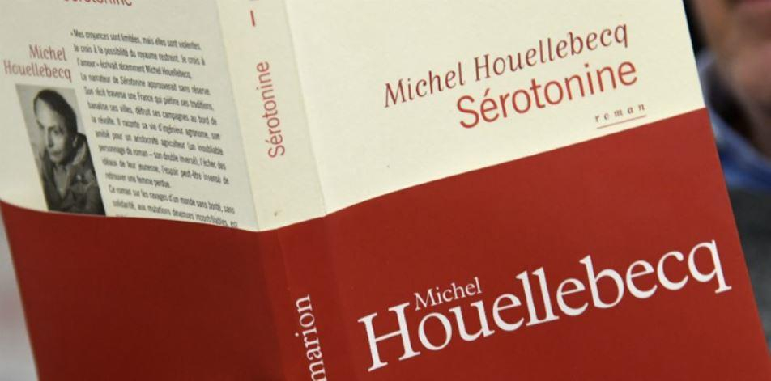

Michel Houellebecq a publié son dernier roman Sérotonine, chez Flammarion au début de 2019.
Le livre est écrit à la première personne et raconte l’histoire de Florent-Claude Labrouste, quarante-six ans, ingénieur agronome. Il a travaillé pour de grands groupes agricoles ou agroalimentaires. Il ne travaille plus, ne vit pas chez ses parents, mais de ses parents. Un héritage honnête suffit à le faire vivoter.
Le roman commence par la phrase suivante : « C’est un petit comprimé blanc, ovale, sécable. » L’auteur parle d’un antidépresseur nouvelle génération de son invention le captorix qui joue sur la sérotonine, justifiant ainsi le titre du roman. Mais ce comprimé aurait aussi bien pu exister, les pilules du bonheur sont légions et rapportent énormément à l’industrie pharmaceutique qui ne se préoccupe pas trop des effets secondaires des médicaments qu’elle vend. Hélas, c’est également le cas ici, cet antidépresseur a un gros défaut ; il diminue considérablement la libido… Ce qui n’empêche pas l’auteur de meubler son ouvrage avec la sexualité et les rapports hommes-femmes, en crochetant par la zoophilie et la pédophilie.
Certains critiques ont fait de cet ouvrage un livre prophétique annonçant la crise des gilets jaunes, car le héros, issu du milieu agricole, rencontre un de ses anciens condisciples, un producteur de lait.
Ce producteur lutte avec ses collègues qui se révoltent contre leurs conditions de vie. En réalité, cet épisode occupe peu de chapitres et ne dure pas ; la crise agricole qui dure depuis plus de cinquante ans ne peut annoncer le blocage des ronds-points. En quelques pages le héros rend visite à son ami, Aymeric d’Harcourt, aristocrate reconverti dans l’agriculture sur ses propres terres et il partage sa misère ; sa femme l’a quitté, emportant avec elle ses deux filles, elles vivent à présent toutes trois à Londres et l’agriculteur communique avec ses filles par Skype.
« …des familles recomposées pour ma part je n’en avais jamais vu, des familles décomposées oui, je n’avais même à peu près vu que ça, hormis bien entendu les cas d’ailleurs nombreux où le processus de décomposition intervenait déjà au stade du couple, avant la production d’enfant. » p. 312
L’État écrase Aymeric d’impôts et ce dernier se met à boire d’abondance jusqu’au moment fatal où il se donnera la mort lors d’une révolte paysanne. Le héros, Florent-Claude reprend ensuite sa route, emportant dans ses bagages une superbe carabine que lui a offert son ami et son existence suit son cours à la recherche de son passé en déroulant une longue tranche de vie grise.
Les belles formules sont présentes dès le début de l’ouvrage, en quelques paroles l’auteur sait poser les mots sur les choses avec justesse, sans excuses et sans fioritures inutiles :
« La nicotine est une drogue parfaite, une drogue simple et dure, qui n’apporte aucune joie, qui se définit entièrement par le manque, et par la cessation du manque. » p. 9
La documentation scientifique n’est jamais absente des livres de Michel Houellebecq, ce n’est pas surprenant pour le lecteur qui fréquente régulièrement ses ouvrages, surtout quand il s’agit de ses sujets de prédilection :
« Les Japonais, et même plus généralement les Asiatiques, tiennent très mal l’alcool, par suite du mauvais fonctionnement chez eux de l’aldéhyde déshydrogénase 2, qui assure la transformation de l’éthanol en acide acétique. » p. 55
Comme à chacun de ses ouvrages la question revient régulièrement sous la plume des journalistes littéraires : Houellebecq est-il choquant, pornographe, vulgaire, ou cède-t-il à l’écriture contemporaine ? Qui sait où se trouve la réponse ? Ce qui aurait choqué il y a quelques années et aurait renvoyé son auteur aux ciseaux de la censure passe aujourd’hui comme une lettre à la poste, comme un débat tout à fait naturel ou décadent :
« …ses prestations sexuelles étaient d’un très bon niveau, en particulier dans le domaine crucial de la pipe, elle léchait le gland avec application sans jamais perdre de vue l’existence des couilles, elle avait juste une lacune pour ce qui est de la gorge profonde, en raison de la taille de sa bouche […] la supériorité de la bouche qui est la langue, se voit de toute façon annulée dans l’univers clos de la gorge profonde, où la langue est ipso facto privée de toute possibilité d’action, enfin, ne polémiquons pas… » p. 67
Ce serait une grave erreur que de jeter le livre aux orties comme le ferait un puritain, car quelques pages plus loin c’est de rupture que parle l’auteur et il le fait avec brio, avec une simplicité banale qui fait ressortir la résonance profonde du cœur des amoureux qui en finissent sans le vouloir vraiment, une rupture comme il en arrive peut-être à chacun de nous, à chaque couple qui n’est pas encore en phase terminale, selon le terme utilisé page 48, ici Houellebecq déroule l’art d’écrire comment les choses se passent dans la réalité, simplement, bêtement, sans que nous ne puissions y faire quelque chose :
« …son regard n’a pas quitté le mien une seule seconde et à un moment donné, malgré elle, des larmes se sont mises à couler, et je n’ai pas bougé, je n’ai pas sauté sur le quai, j’ai attendu que les portes se referment. Pour cela je mérite la mort, et même des châtiments beaucoup plus graves, je ne peux pas me le dissimuler : je terminerai ma vie malheureux, acariâtre et seul, et je l’aurai mérité. » p. 101
Ce qui est assez stupéfiant dans cet amas de solitude que nous raconte intimement l’auteur, c’est qu’il parvient à faire des cartes de menus de restaurant et du quartier de Paris dans lequel il s’est posé (Place d’Italie et de l’hôtel Mercure-Gobelin) une véritable peinture attrayante, non pas dans le descriptif littéraire ennuyeux qui occupe sept ou huit pages avant l’action, mais dans une description minimaliste du style « liste des courses à faire » et force est de reconnaître qu’en suivant ses pas dans le quartier on y respire cet air vicié et pollué qui est particulier à certains quartiers de Paris.
Tout au long de l’ouvrage l’auteur remonte son passé, il a le fol espoir désabusé de reconquérir ses maîtresses en se débarrassant des obstacles imprévus. Sexe, désespoir, solitude et même envie de meurtre sont au programme :
« À vrai dire si j’avais été un cerf ou un macaque du Brésil, la question ne se serait même pas posée : la première action d’un mammifère mâle, lorsqu’il fait la conquête d’une femelle, est de détruire toute progéniture antérieure, afin d’assurer la prééminence de son génotype. Cette attitude s’était longtemps maintenue, dans les premières populations humaines. » p. 301
C’est à la fin de l’ouvrage que nous attend une surprise de taille. Le héros, que nous avions pris l’habitude de suivre dans une marche à soubresauts, tantôt par des poussées en avant, tantôt par des bonds dans le passé, nous dévoile une chose capitale, à laquelle, vu la teinte d’écriture plutôt pessimiste qui emplit les pages, nous aurions eu du mal à croire cette révélation si elle nous avait été communiquée dès le début :
« J’aurai pu rendre une femme heureuse. Enfin, deux ; j’ai dit lesquelles. Tout était clair, extrêmement clair, depuis le début : mais nous n’en avons pas tenu compte. Avons-nous cédé à des illusions de liberté individuelle, de vie ouverte, d’infini des possibles ? » p. 347
Mais ce n’est pas là la seule surprise qui nous est réservée et qui termine le dernier opus de Michel Houellebecq. En 2010, je terminais ma critique sur son ouvrage « La carte et le territoire » par la phrase suivante :
« Et il faut peut-être aussi le dire, les pulsions faiblissent avec le temps, même la pulsion de mort. Certains signes posés ça et là en guise de balise, laissent à penser que le prochain roman de Houellebecq pourrait être un roman catholique. »
Certes, nous n’en sommes pas encore là, mais les choses avancent, c’est le moins qu’on puisse dire :
« Dieu s’occupe de nous en réalité, il pense à nous à chaque instant, et il nous donne des directives parfois très précises. Ces élans d’amour qui affluent dans nos poitrines jusqu’à nous couper le souffle, ces illuminations, ces extases, inexplicables si l’on considère notre nature biologique, notre statut de simple primate, sont des signes extrêmement clairs. » p. 347
Partager cette page